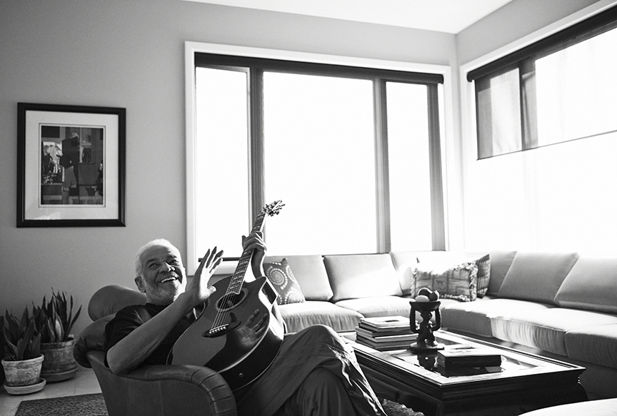
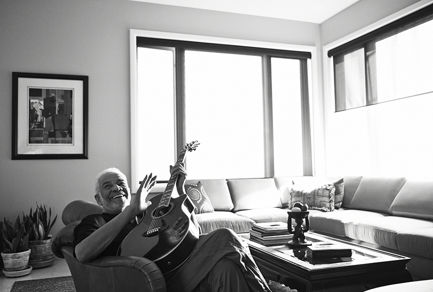

Radiohead Singer Thom Yorke Recording His Piece


Here is Radiohead in the studio
Radiohead recorded hits like "Creep" and "Paranoid Android".
For all orders and inquiries about leapord print jackets please call 555-555
Here is Radiohead in the studio
Radiohead recorded hits like "Creep" and "Paranoid Android".
 

Bill Withers recorded hits like "Let It Be" and "Ain't No Sunshine".